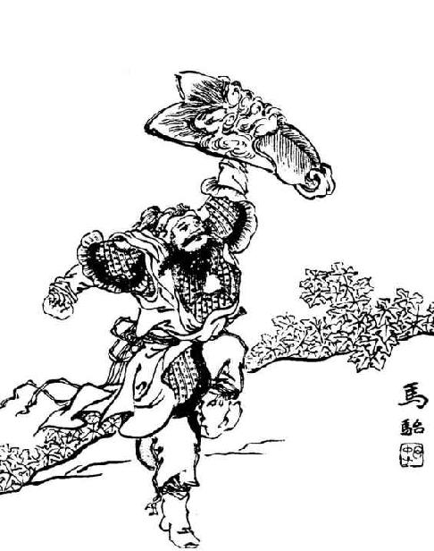
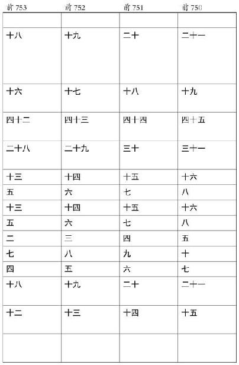

史记卷一百二十三
大宛列传第六十三
大宛 之迹，见自张骞 。张骞 ，汉中 人。建元 中为郎。是时天子问匈奴 降者，皆言匈奴 破月氏王 ，以其头为饮器，月氏 遁逃而常怨仇匈奴 ，无与共击之。汉 方欲事灭胡 ，闻此言，因欲通使。道必更匈奴 中，乃募能使者。骞 以郎应募，使月氏 ，与堂邑氏胡 奴甘父 俱出陇西 。经匈奴 ，匈奴 得之，传诣单于。单于留之，曰：“月氏 在吾北，汉 何以得往使？吾欲使越 ，汉 肯听我乎？”留骞 十馀岁，与妻，有子，然骞 持汉 节不失。
居匈奴 中，益宽，骞 因与其属亡乡月氏 ，西走数十日至大宛 。大宛 闻汉 之饶财，欲通不得，见骞 ，喜，问曰：“若欲何之？”骞 曰：“为汉 使月氏 ，而为匈奴 所闭道。今亡，唯王使人导送我。诚得至，反汉 ，汉 之赂遗王财物不可胜言。”大宛 以为然，遣骞 ，为发导绎，抵康居 ，康居 传致大月氏 。大月氏王 已为胡 所杀，立其太子为王。既臣大夏 而居，地肥饶，少寇，志安乐，又自以远汉 ，殊无报胡 之心。骞 从月氏 至大夏 ，竟不能得月氏 要领。
留岁馀，还，并南山 ，欲从羌 中归，复为匈奴 所得。留岁馀，单于死，左谷蠡王攻其太子自立，国内乱，骞 与胡 妻及堂邑父 俱亡归汉 。汉 拜骞 为太中大夫，堂邑父 为奉使君。
骞 为人强力，宽大信人，蛮夷爱之。堂邑父 故胡 人，善射，穷急射禽兽给食。初，骞 行时百馀人，去十三岁，唯二人得还。
骞 身所至者大宛 、大月氏 、大夏 、康居 ，而传闻其旁大国五六，具为天子言之。曰：
大宛 在匈奴 西南，在汉 正西，去汉 可万里。其俗土著，耕田，田稻麦。有蒲陶酒。多善马，马汗血，其先天马子也。有城郭屋室。其属邑大小七十馀城，众可数十万。其兵弓矛骑射。其北则康居 ，西则大月氏 ，西南则大夏 ，东北则乌孙 ，东则扜 、于窴 。于窴 之西，则水皆西流，注西海 ；其东水东流，注盐泽 。盐泽 潜行地下，其南则河 源出焉。多玉石，河 注中国。而楼兰 、姑师 邑有城郭，临盐泽 。盐泽 去长 安 可五千里。匈奴 右方居盐泽 以东，至陇西 长城，南接羌 ，鬲汉 道焉。
乌孙 在大宛 东北可二千里，行国，随畜，与匈奴 同俗。控弦者数万，敢战。故服匈奴 ，及盛，取其羁属，不肯往朝会焉。
康居 在大宛 西北可二千里，行国，与月氏 大同俗。控弦者八九万人。与大宛 邻国。国小，南羁事月氏 ，东羁事匈奴 。
奄蔡 在康居 西北可二千里，行国，与康居 大同俗。控弦者十馀万。临大泽，无崖，盖乃北海 云。
大月氏 在大宛 西可二三千里，居妫水 北。其南则大夏 ，西则安息 ，北则康居 。行国也，随畜移徙，与匈奴 同俗。控弦者可一二十万。故时强，轻匈奴 ，及冒顿 立，攻破月氏 ，至匈奴老上单于 ，杀月氏王 ，以其头为饮器。始月氏 居敦煌 、祁连 间，及为匈奴 所败，乃远去，过宛 ，西击大夏 而臣之，遂都妫水 北，为王庭。其馀小众不能去者，保南山羌 ，号小月氏 。
安息 在大月氏 西可数千里。其俗土著，耕田，田稻麦，蒲陶酒。城邑如大宛 。其属小大数百城，地方数千里，最为大国。临妫水 ，有市，民商贾用车及船，行旁国或数千里。以银为钱，钱如其王面，王死辄更钱，效王面焉。画革旁行以为书记。其西则条枝 ，北有奄蔡 、黎轩 。
条枝 在安息 西数千里，临西海 。暑湿。耕田，田稻。有大鸟，卵如瓮。人众甚多，往往有小君长，而安息 役属之，以为外国。国善眩。安息长老传闻条枝 有弱水 、西王母 ，而未尝见。
大夏 在大宛 西南二千馀里妫水 南。其俗土著，有城屋，与大宛 同俗。无大君长，往往城邑置小长。其兵弱，畏战。善贾市。及大月氏 西徙，攻败之，皆臣畜大夏 。大夏 民多，可百馀万。其都曰蓝市城 ，有市贩贾诸物。其东南有身毒国 。
骞
曰：“臣在大夏
时，见邛
竹杖、蜀
布。问曰：‘安得此？’大夏国
人曰：‘吾贾人往市之身毒
。身毒
在大夏
东南可数千里。其俗土著，大与大夏
同，而卑湿暑热云。其人民乘象以战。其国临大水焉。’以骞
度之，大夏
去汉
万二千里，居汉
西南。今身毒国
又居大夏
东南数千里，有蜀
物，此其去蜀
不远矣。今使大夏
，从羌
中，险，羌
人恶之；少北，则为匈奴
所得；从蜀
宜径，又无寇。”天子既闻大宛
及大夏
、安息
之属皆大国，多奇物，土著，颇与中国同业，而兵弱，贵汉
财物；其北有大月氏
、康居
之属，兵强，可以赂遗设利朝也。且诚得而以义属之，则广地万里，重九译，致殊俗，威德遍于四
海。天子欣然，以骞
言为然，乃令骞
因蜀犍为
发间使，四道并出：出 ，出冉
，出徙
，出邛
、僰
，皆各行一二千里。其北方闭氐
、筰
，南方闭巂
、昆明
。昆明
之属无君长，善寇盗，辄杀略汉
使，终莫得通。然闻其西可千馀里有乘象国，名曰滇越
，而蜀
贾奸出物者或至焉，于是汉
以求大夏
道始通滇国
。初，汉
欲通西南夷
，费多，道不通，罢之。及张骞
言可以通大夏
，乃复事西南夷
。
，出冉
，出徙
，出邛
、僰
，皆各行一二千里。其北方闭氐
、筰
，南方闭巂
、昆明
。昆明
之属无君长，善寇盗，辄杀略汉
使，终莫得通。然闻其西可千馀里有乘象国，名曰滇越
，而蜀
贾奸出物者或至焉，于是汉
以求大夏
道始通滇国
。初，汉
欲通西南夷
，费多，道不通，罢之。及张骞
言可以通大夏
，乃复事西南夷
。
骞 以校尉从大将军击匈奴 ，知水草处，军得以不乏，乃封骞 为博望侯 。是岁元朔 六年也。其明年，骞 为卫尉，与李将军 俱出右北平 击匈奴 。匈奴 围李将军 ，军失亡多；而骞 后期当斩，赎为庶人。是岁汉 遣骠骑破匈奴西域 数万人，至祁连山 。其明年，浑邪王 率其民降汉 ，而金城 、河西 西并南山 至盐泽 空无匈奴 。匈奴 时有候者到，而希矣。其后二年，汉 击走单于幕北。
是后天子数问骞大夏 之属。骞 既失侯，因言曰：“臣居匈奴 中，闻乌孙王 号昆莫 ，昆莫 之父，匈奴 西边小国也。匈奴 攻杀其父，而昆莫 生，弃于野。乌嗛肉蜚其上，狼往乳之。单于怪以为神，而收长之。及壮，使将兵，数有功，单于复以其父之民予昆莫 ，令长守于西域 。昆莫 收养其民，攻旁小邑，控弦数万，习攻战。单于死，昆莫 乃率其众远徙，中立，不肯朝会匈奴 。匈奴 遣奇兵击，不胜，以为神而远之，因羁属之，不大攻。今单于新困于汉 ，而故浑邪 地空无人。蛮夷俗贪汉 财物，今诚以此时而厚币赂乌孙 ，招以益东，居故浑邪 之地，与汉 结昆弟，其势宜听，听则是断匈奴 右臂也。既连乌孙 ，自其西大夏 之属皆可招来而为外臣。”天子以为然，拜骞 为中郎将，将三百人，马各二匹，牛羊以万数，赍金币帛直数千巨万，多持节副使，道可使，使遗之他旁国。
骞 既至乌孙 ，乌孙王昆莫 见汉 使如单于礼，骞 大惭，知蛮夷贪，乃曰：“天子致赐，王不拜则还赐。”昆莫 起拜赐，其他如故。骞 谕使指曰：“乌孙 能东居浑邪 地，则汉 遣翁主为昆莫 夫人。”乌孙 国分，王老，而远汉 ，未知其大小，素服属匈奴 日久矣，且又近之，其大臣皆畏胡 ，不欲移徙，王不能专制。骞 不得其要领。昆莫 有十馀子，其中子曰大禄 ，强，善将众，将众别居万馀骑。大禄 兄为太子，太子有子曰岑娶 ，而太子蚤死。临死谓其父昆莫 曰：“必以岑娶 为太子，无令他人代之。”昆莫 哀而许之，卒以岑娶 为太子。大禄 怒其不得代太子也，乃收其诸昆弟，将其众畔，谋攻岑娶 及昆莫 。昆莫 老，常恐大禄 杀岑娶 ，予岑娶 万馀骑别居，而昆莫 有万馀骑自备，国众分为三，而其大总取羁属昆莫 ，昆莫 亦以此不敢专约于骞 。
骞 因分遣副使使大宛 、康居 、大月氏 、大夏 、安息 、身毒 、于窴 、扜 及诸旁国。乌孙 发导译送骞 还，骞 与乌孙 遣使数十人，马数十匹报谢，因令窥汉 ，知其广大。
骞 还到，拜为大行，列于九卿。岁馀，卒。
乌孙 使既见汉 人众富厚，归报其国，其国乃益重汉 。其后岁馀，骞 所遣使通大夏 之属者皆颇与其人俱来，于是西北国始通于汉 矣。然张骞 凿空，其后使往者皆称博望侯 ，以为质于外国，外国由此信之。
自博望侯骞 死后，匈奴 闻汉 通乌孙 ，怒，欲击之。及汉 使乌孙 ，若出其南，抵大宛 、大月氏 相属，乌孙 乃恐，使使献马，愿得尚汉 女翁主为昆弟。天子问群臣议计，皆曰“必先纳聘，然后乃遣女”。初，天子发书易 ，云“神马当从西北来”。得乌孙 马好，名曰“天马”。及得大宛 汗血马，益壮，更名乌孙 马曰“西极”，名大宛 马曰“天马”云。而汉 始筑令居 以西，初置酒泉郡 以通西北国。因益发使抵安息 、奄蔡 、黎轩 、条枝 、身毒国 。而天子好宛 马，使者相望于道。诸使外国一辈大者数百，少者百馀人，人所赍操大放博望侯 时。其后益习而衰少焉。汉 率一岁中使多者十馀，少者五六辈，远者八九岁，近者数岁而反。
是时汉 既灭越 ，而蜀 、西南夷 皆震，请吏入朝。于是置益州 、越巂 、牂柯 、沈黎 、汶山郡 ，欲地接以前通大夏 。乃遣使柏始昌 、吕越人 等岁十馀辈，出此初郡抵大夏 ，皆复闭昆明 ，为所杀，夺币财，终莫能通至大夏 焉。于是汉 发三辅 罪人，因巴蜀 士数万人，遣两将军郭昌 、卫广 等往击昆明 之遮汉 使者，斩首虏数万人而去。其后遣使，昆明 复为寇，竟莫能得通。而北道酒泉 抵大夏 ，使者既多，而外国益厌汉 币，不贵其物。
自博望侯 开外国道以尊贵，其后从吏卒皆争上书言外国奇怪利害，求使。天子为其绝远，非人所乐往，听其言，予节，募吏民毋问所从来，为具备人众遣之，以广其道。来还不能毋侵盗币物，及使失指，天子为其习之，辄覆案致重罪，以激怒令赎，复求使。使端无穷，而轻犯法。其吏卒亦辄复盛推外国所有，言大者予节，言小者为副，故妄言无行之徒皆争效之。其使皆贫人子，私县官赍物，欲贱市以私其利外国。外国亦厌汉 使人人有言轻重，度汉 兵远不能至，而禁其食物以苦汉 使。汉 使乏绝积怨，至相攻击。而楼兰 、姑师 小国耳，当空道，攻劫汉 使王恢 等尤甚。而匈奴 奇兵时时遮击使西国者。使者争遍言外国灾害，皆有城邑，兵弱易击。于是天子以故遣从骠侯破奴 将属国骑及郡兵数万，至匈河水 ，欲以击胡 ，胡 皆去。其明年，击姑师 ，破奴 与轻骑七百馀先至，虏楼兰王 ，遂破姑师 。因举兵威 以困乌孙 、大宛 之属。还，封破奴 为浞野侯 。王恢 数使，为楼兰 所苦，言天子，天子发兵令恢 佐破奴 击破之，封恢 为浩侯 。于是酒泉 列亭鄣至玉门 矣。
乌孙 以千匹马聘汉 女，汉 遣宗室女江都 翁主往妻乌孙 ，乌孙王昆莫 以为右夫人。匈奴 亦遣女妻昆莫 ，昆莫 以为左夫人。昆莫 曰“我老”，乃令其孙岑娶 妻翁主。乌孙 多马，其富人至有四五千匹马。
初，汉 使至安息 ，安息王 令将二万骑迎于东界。东界去王都数千里。行比至，过数十城，人民相属甚多。汉 使还，而后发使随汉 使来观汉 广大，以大鸟卵及黎轩 善眩人献于汉 。及宛 西小国 潜 、大益 ，宛 东姑师 、扜 、苏薤 之属，皆随汉 使献见天子。天子大悦。
而汉 使穷河 源，河 源出于窴 ，其山多玉石，采来，天子案古图书，名河 所出山曰昆仑 云。
是时上方数巡狩海上，乃悉从外国客，大都多人则过之，散财帛以赏赐，厚具以饶给之，以览示汉 富厚焉。于是大觳抵，出奇戏诸怪物，多聚观者，行赏赐，酒池肉林，令外国客遍观各仓库府藏之积，见汉 之广大，倾骇之。及加其眩者之工，而觳抵奇戏岁增变，甚盛益兴，自此始。
西北外国使，更来更去。宛 以西，皆自以远，尚骄恣晏然，未可诎以礼羁縻而使也。自乌孙 以西至安息 ，以近匈奴 ，匈奴 困月氏 也，匈奴 使持单于一信，则国国传送食，不敢留苦；及至汉 使，非出币帛不得食，不市畜不得骑用。所以然者，远汉 ，而汉 多财物，故必市乃得所欲，然以畏匈奴 于汉 使焉。宛 左右以蒲陶为酒，富人藏酒至万馀石，久者数十岁不败。俗嗜酒，马嗜苜蓿。汉 使取其实来，于是天子始种苜蓿、蒲陶肥饶地。及天马多，外国使来众，则离宫别观旁尽种蒲萄、苜蓿极望。自大宛 以西至安息 ，国虽颇异言，然大同俗，相知言。其人皆深眼，多须髯，善市贾，争分铢。俗贵女子，女子所言而丈夫乃决正。其地皆无丝漆，不知铸钱器。及汉 使亡卒降，教铸作他兵器。得汉 黄白金，辄以为器，不用为币。
而汉 使者往既多，其少从率多进熟于天子，言曰：“宛 有善马在贰师城 ，匿不肯与汉 使。”天子既好宛 马，闻之甘心，使壮士车令 等持千金及金马以请宛王贰师城 善马。宛国 饶汉 物，相与谋曰：“汉 去我远，而盐水 中数败，出其北有胡 寇，出其南乏水草。又且往往而绝邑，乏食者多。汉 使数百人为辈来，而常乏食，死者过半，是安能致大军乎？无奈我何。且贰师 马，宛 宝马也。”遂不肯予汉 使。汉 使怒，妄言，椎金马而去。宛 贵人怒曰：“汉 使至轻我！”遣汉 使去，令其东边郁成 遮攻杀汉 使，取其财物。于是天 子大怒。诸尝使宛姚定汉 等言宛 兵弱，诚以汉 兵不过三千人，强弩射之，即尽虏破宛 矣。天子已尝使浞野侯 攻楼兰 ，以七百骑先至，虏其王，以定汉 等言为然，而欲侯宠姬李氏 ，拜李广利 为贰师将军，发属国六千骑，及郡国恶少年数万人，以往伐宛 。期至贰师城 取善马，故号“贰师将军”。赵始成 为军正，故浩侯王恢 使导军，而李哆 为校尉，制军事。是岁太初 元年也。而关东 蝗大起，蜚西至敦煌 。
贰师将军军既西过盐水 ，当道小国恐，各坚城守，不肯给食。攻之不能下。下者得食，不下者数日则去。比至郁成 ，士至者不过数千，皆饥罢。攻郁成 ，郁成 大破之，所杀伤甚众。贰师将军与哆 、始成 等计：“至郁成 尚不能举，况至其王都乎？”引兵而还。往来二岁。还至敦煌 ，士不过什一二。使使上书言：“道远多乏食；且士卒不患战，患饥。人少，不足以拔宛 。愿且罢兵，益发而复往。”天子闻之，大怒，而使使遮玉门 ，曰军有敢入者辄斩之！贰师恐，因留敦煌 。
其夏，汉 亡浞野 之兵二万馀于匈奴 。公卿及议者皆愿罢击宛 军，专力攻胡 ，天子已业诛宛 ，宛 小国而不能下，则大夏 之属轻汉 ，而宛 善马绝不来，乌孙 、仑头 易苦汉 使矣，为外国笑。乃案言伐宛 尤不便者邓光 等，赦囚徒材官，益发恶少年及边骑，岁馀而出敦煌 者六万人，负私从者不与。牛十万，马三万馀匹，驴骡橐它以万数。多赍粮，兵弩甚设，天下骚动，传相奉伐宛 ，凡五十馀校尉。宛 王城中无井，皆汲城外流水，于是乃遣水工徙其城下水空以空其城。益发戍甲卒十八万酒泉 、张掖北 ，置居延 、休屠 以卫酒泉 ，而发天下七科適，及载糒给贰师。转车人徒相连属至敦煌 。而拜习马者二人为执驱校尉，备破宛 择取其善马云。
于是贰师后复行，兵多，而所至小国莫不迎，出食给军。至仑头 ，仑头 不下，攻数日，屠之。自此而西，平行至宛城 ，汉 兵到者三万人。宛 兵迎击汉 兵，汉 兵射败之，宛 走入葆乘其城。贰师兵欲行攻郁成 ，恐留行而令宛益生诈，乃先至宛 ，决其水源，移之，则宛 固已忧困。围其城，攻之四十馀日，其外城坏，虏宛 贵人勇将煎靡 。宛 大恐，走入中城。宛 贵人相与谋曰：“汉 所为攻宛 ，以王毋寡 匿善马而杀汉 使。今杀王毋寡 而出善马，汉 兵宜解；即不解，乃力战而死，未晚也。”宛 贵人皆以为然，共杀其王毋寡 ，持其头遣贵人使贰师，约曰：“汉 毋攻我。我尽出善马，恣所取，而给汉 军食。即不听，我尽杀善马，而康居 之救且至。至，我居内，康居 居外，与汉 军战。汉 军熟计之，何从？”是时康居 候视汉 兵，汉 兵尚盛，不敢进。贰师与赵始成 、李哆 等计：“闻宛 城中新得秦 人，知穿井，而其内食尚多。所为来，诛首 恶者毋寡 。毋寡 头已至，如此而不许解兵，则坚守，而康居 候汉 罢而来救宛 ，破汉 军必矣。”军吏皆以为然，许宛 之约。宛 乃出其善马，令汉 自择之，而多出食食给汉 军。汉 军取其善马数十匹，中马以下牡牝三千馀匹，而立宛 贵人之故待遇汉 使善者名昧蔡 以为宛 王，与盟而罢兵。终不得入中城。乃罢而引归。
初，贰师起敦煌 西，以为人多，道上国不能食，乃分为数军，从南北道。校尉王申生 、故鸿胪壶充国 等千馀人，别到郁成 。郁成 城守，不肯给食其军。王申生 去大军二百里，侦而轻之，责郁成 。郁成 食不肯出，窥知申生 军日少，晨用三千人攻，戮杀申生 等，军破，数人脱亡，走贰师。贰师令搜粟都尉上官桀 往攻破郁成 。郁成王 亡走康居 ，桀 追至康居 。康居 闻汉 已破宛 ，乃出郁成王 予桀 ，桀 令四骑士缚守诣大将军。四人相谓曰：“郁成王 汉国 所毒，今生将去，卒失大事。”欲杀，莫敢先击。上邽 骑士赵弟 最少，拔剑击之，斩郁成王 ，赍头。弟 、桀 等逐及大将军。
初，贰师后行，天子使使告乌孙 ，大发兵并力击宛 。乌孙 发二千骑往，持两端，不肯前。贰师将军之东，诸所过小国闻宛 破，皆使其子弟从军入献，见天子，因以为质焉。贰师之伐宛 也，而军正赵始成 力战，功最多；及上官桀 敢深入，李哆 为谋计，军入玉门 者万馀人，军马千馀匹。贰师后行，军非乏食，战死不能多，而将吏贪，多不爱士卒，侵牟之，以此物故众。天子为万里而伐宛 ，不录过，封广利 为海西侯 。又封身斩郁成王 者骑士赵弟 为新畤侯 。军正赵始成 为光禄大夫，上官桀 为少府，李哆 为上党 太守。军官吏为九卿者三人，诸侯相、郡守、二千石者百馀人，千石以下千馀人。奋行者官过其望，以適过行者皆绌其劳。士卒赐直四万金。伐宛 再反，凡四岁而得罢焉。
汉 已伐宛 ，立昧蔡 为宛王 而去。岁馀，宛 贵人以为昧蔡 善谀，使我国遇屠，乃相与杀昧蔡 ，立毋寡 昆弟曰蝉封 为宛王 ，而遣其子入质于汉 。汉 因使使赂赐以镇抚之。
而汉
发使十馀辈至宛
西诸外国，求奇物，因风览以伐宛
之威德。而敦煌
置酒泉
都尉；西至盐水
，往往有亭。而仑头
有田卒数百人，因置使者护田积粟，以给使外国者。
太史公 曰：禹本纪 言“河 出昆仑 。昆仑 其高二千五百馀里，日月所相避隐为光明也。其上有醴泉 、瑶池 ”。今自张骞 使大夏 之后也，穷河 源，恶睹本纪所谓昆仑 者乎？故言九州山川，尚书 近之矣。至禹本纪 、山海经 所 有怪物，余不敢言之也。